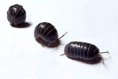
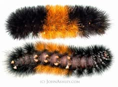
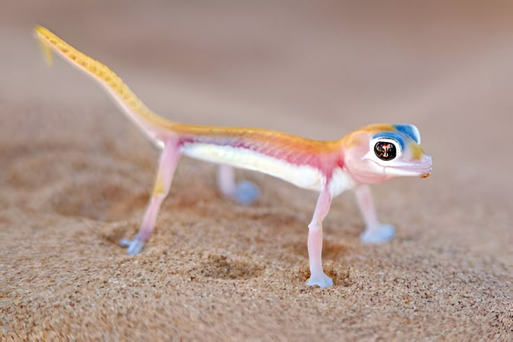
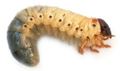
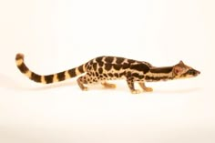
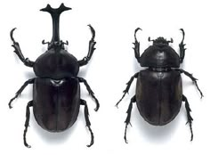
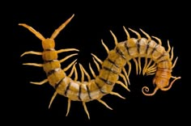
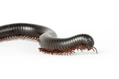
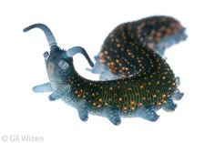
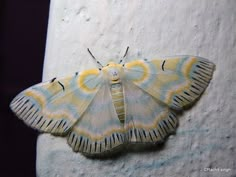

O tatuzinho-de-jardim (ou porquinho-da-índia), cientificamente chamado Armadillidium vulgare, é um isópode terrestre que vive em ambientes úmidos, alimentando-se de matéria orgânica em decomposição. Sua principal característica é a capacidade de se enrolar como uma bola para se proteger de predadores e da desidratação. Inofensivo aos humanos, ele tem um papel ecológico importante como decompositor.


A Woolly Bear Caterpillar (ou lagarta-lanosa) é a larva da mariposa Isia isabella (Isabella Tiger Moth). Reconhecível por suas faixas pretas nas extremidades e laranja/marrom no centro, há um mito de que a largura da faixa marrom prevê a severidade do inverno, mas isso não tem base científica. Inofensiva e sem veneno, ela se alimenta de plantas e, após um período de dormência, transforma-se em mariposa.

O gecko-da-namíbia (Pachydactylus rangei), também chamado de gecko fantasma ou gecko dos dedos palmados, é um réptil adaptado ao deserto da Namíbia. Sua pele translúcida e coloração camuflada ajudam-no a se misturar com as dunas, enquanto seus grandes olhos facilitam a visão noturna. Seus dedos palmados permitem que ele se mova com agilidade na areia fofa, como se "nadasse" no deserto. Um verdadeiro especialista em sobreviver em ambientes extremos!

Larva de besouro escaravelho, também chamada de larva de coró, pertencente à família Scarabaeidae. Essas larvas possuem um corpo curvado em forma de C, cor clara e cabeça escura. Vivem no solo, onde se alimentam de raízes, podendo danificar plantações e jardins, o que as torna pragas agrícolas. No entanto, quando adultas, esses besouros desempenham um papel ecológico importante, ajudando na decomposição de matéria orgânica e na aeração do solo.

Civeta africana-de-palmira (Nandinia binotata), um mamífero arborícola e noturno das florestas africanas. Com corpo alongado, cauda longa e pelagem manchada, ela se camufla bem nas árvores. Onívora, alimenta-se de frutas, pequenos animais e ovos. Pertence à família Viverridae, relacionada a mangustos e suricatos. Algumas civetas são conhecidas por sua ligação com o polêmico café kopi luwak, mas esta espécie em particular destaca-se como um exemplo interessante da diversidade de mamíferos pouco conhecidos.

Besouros-rinocerontes (Oryctes nasicornis), grandes insetos da família Scarabaeidae. O macho (esquerda) se destaca pelo chifre característico, usado em disputas territoriais, enquanto a fêmea (direita) não possui essa estrutura. Encontrados em florestas e áreas tropicais, esses besouros são inofensivos aos humanos. Suas larvas vivem no solo, alimentando-se de madeira em decomposição e ajudando na reciclagem de matéria orgânica. Na fase adulta, têm vida curta e se alimentam pouco. Impressionam pela força - podem carregar objetos muito mais pesados que seu corpo - e pela aparência singular, que lembra uma armadura medieval.

Centopeia do gênero Scolopendra, um dos mais conhecidos entre os quilópodes. Esses artrópodes predadores possuem um corpo segmentado com múltiplos pares de pernas (variando entre 15 a 177 pares, nunca exatamente 100). Seu destaque são as forcípulas - estruturas em forma de presas usadas para injetar veneno em presas como insetos e pequenos vertebrados. Embora sua aparência seja intimidante e sua picada possa ser dolorosa, a maioria não oferece perigo grave aos humanos (exceto algumas espécies maiores). Excelentes caçadoras noturnas, vivem escondidas sob pedras e folhas, atuando como verdadeiras predadoras do subsolo.

Piolho-de-cobra (milípede), da classe Diplopoda. Diferente das centopeias, possui dois pares de pernas por segmento corporal, movendo-se de forma sincronizada. Esses animais detritívoros se alimentam de matéria orgânica em decomposição, desempenhando um papel importante na reciclagem de nutrientes do solo. Vivem em ambientes úmidos, sob folhas e troncos. Totalmente inofensivos para humanos, quando ameaçados se enrolam em espiral e podem liberar um líquido de defesa com odor forte, mas inócuo. São criaturas tímidas, ecologicamente úteis e com uma curiosa locomoção organizada.

Larva de besouro do gênero Phengodidae, popularmente chamada de besouro-de-fio-de-ouro ou besouro-lanterna. Essa é uma fêmea larvaliforme, que mantém a forma de larva mesmo na fase adulta, diferente dos machos que se transformam em besouros alados. Essas larvas possuem um corpo segmentado e alongado, com tubérculos laranja que emitem luz através de bioluminescência, além de apresentarem antenas e patas típicas de larvas de besouros. Algumas espécies são predadoras, alimentando-se principalmente de larvas de cupins e formigas subterrâneas. Sua aparência peculiar e capacidade de emitir luz fazem desses insetos um exemplo extraordinário da biodiversidade, mostrando como a natureza pode criar formas de vida tão incomuns quanto fascinantes.

Essa é uma mariposa da espécie Cyana meyricki, pertencente à família Erebidae. Ela é conhecida por suas cores delicadas e padrões geométricos impressionantes, que parecem ter sido desenhados à mão. Suas asas apresentam tons suaves de azul, amarelo e branco, com listras e marcas pretas bem definidas, o que lhe confere uma aparência quase artística. Essa espécie é encontrada principalmente em regiões do sul da Ásia, como Índia e Sri Lanka. Apesar de sua aparência chamativa, trata-se de um inseto inofensivo, que costuma ser ativo durante a noite, como a maioria das mariposas.